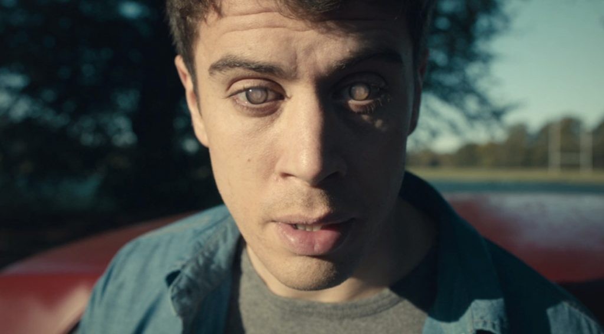
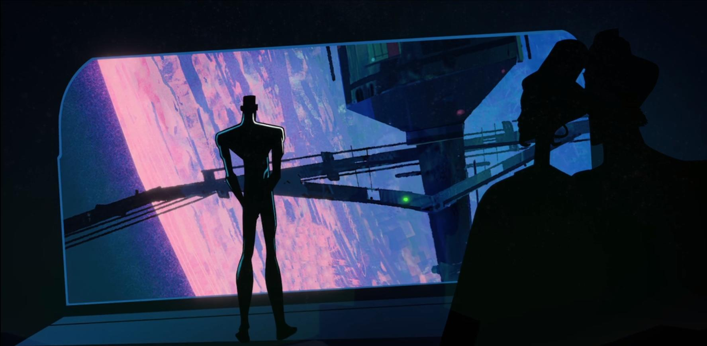
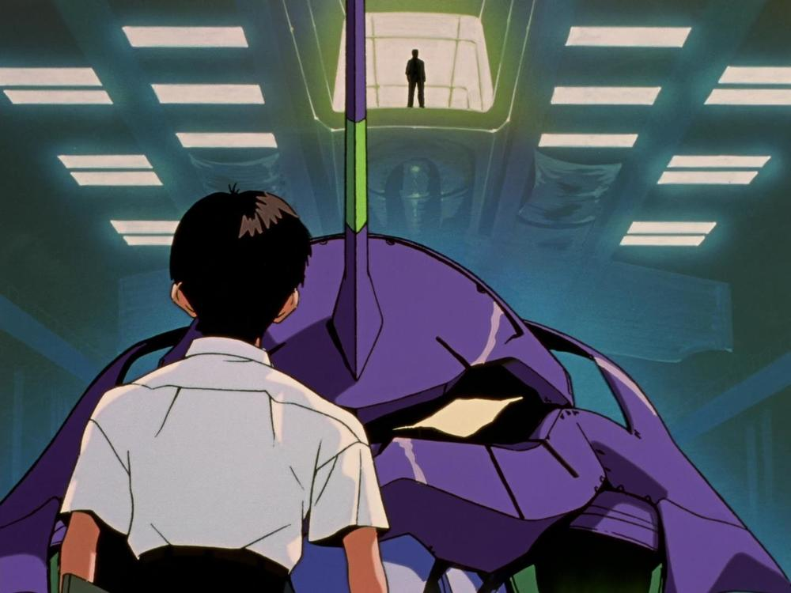

Séries
live_tv
play_arrow
share
Black Mirror

Uma espécie de híbrido entre "The Twilight Zone" e "Tales of the Unexpected", Black Mirror explora sensações do mal-estar contemporâneo. Cada episódio conta uma história diferente, traçando uma antologia que mostra o lado negro da vida atrelada à tecnologia.
live_tv
play_arrow
share
Love, Death & Robots

Dezoito histórias comandadas por uma comunidade global de animação, com talentos e perspectivas únicas de estúdios de animação inovadores, diretores e artistas de todo o mundo. Cada filme é meticulosamente trabalhado, carregado com uma mistura de energia, ação e humor negro sem remorso.
live_tv
share
The Twilight Zone
Além da Imaginação apresenta histórias de ficção científica, suspense, fantasia e terror, com elementos sobrenaturais e inexplicáveis, como viagens no tempo, mundos paralelos, viagens espaciais, alienígenas, fantasmas, vampiros e outras aparições misteriosas. Elas aconteciam num local que era chamado de "Twilight Zone", a "Zona do Crepúsculo".
live_tv
star
play_arrow
share
Neon Genesis Evangelion

A.D. 2015. Já se passaram quinze anos desde esse dia do ano 2000 quando morreram dois milhões de seres humanos devido ao Second Impact, uma catástrofe planetária que arrastou glaciares e submergiu uma enorme parte do planeta. Quando tudo pareceu estar acabado, os anjos voltam